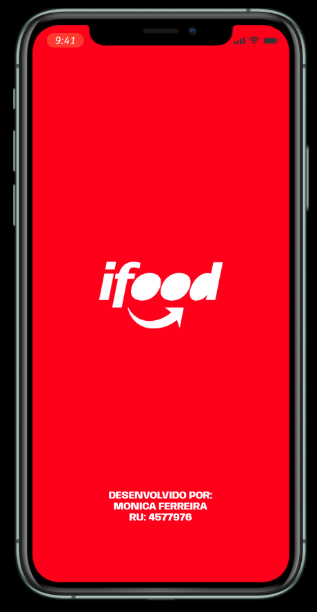

Site de Vendas de Passagens Aéreas - Bora Decolar


Acesse aqui
Este projeto foi desenvolvido como estudo de html e css, foi o meu primeiro contato com as linguagens. Pretendo reescreve-lo agora que aprendi muito mais, porém sempre guardarei com carinho o meu primeiro trabalho.
Protótipo - Ifood Clone 
Acesse aqui
Estudando a ferramenta FIGMA para construir designs de sistemas, o modelo de estudo foi o aplicativo IFOOD.


Briefing de APP - Startup de Adoção de Pet
Acesse aqui
Com base em uma entrevista, foi feito um BRIEFING de um projeto. Foi utilizado o Whiteboard do FIGMA para organizar as ideias e anotações. Também sendo feito um fluxograma das futuras telas a serem desenvolvidas do app.
Protótipo na fase de Wireframe (Baixa e Média Fidelidade) - APP de Tarefas
Acesse aqui
O objetivo desse projeto foi entender as etapas do Design ao criar um protótipo de aplicativo de tarefas. Aqui foi usado o FIGMA para desenhar os Wireframes de Baixa e Média fidelidade.